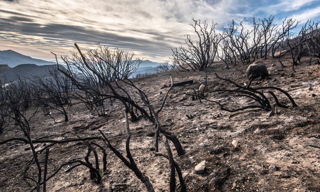

"The Horde of the Chest"
by David Olsen
Charles Dickens did a masterful thing when he started writing A Christmas Carol. He began the tale of Scrooge’s miser lifestyle, and miserable evening, with: “Marley was dead, to begin with.” Funny thing, first lines. They set the mood for the rest of the reading, giving hints about what to expect, and maybe even hint about the upcoming plot. With that in mind, I give my story’s ceremonial first line:
People suck, and I hate germs.
Now, let me take you back to a perfect summer day, not-so-long ago. I was at home, enjoying the end of a long week of work, school, and life in general. I wanted nothing more than to lay in bed from sun up, to sun down, enjoying the undisturbed passage of time. I was halfway there, too, when the doorbell rang.
At the door was a pair of ladies, who jumped right into their story. They were sisters, who were in the process of moving into a new apartment, they needed help getting a wooden chest from their grandma’s house, and a friend had recommended me.
In the interest of full disclosure, this friend would have gladly done it himself, but he unfortunately realized he was three hours late for work. In his hysteria, he and gave them my name and address.
(Again, in full disclosure, he and I aren’t friends anymore.)
Suddenly beset with a moral dilemma, over a day suited for quiet, reflection, and binge-watching Netflix to a bowl of cheese puffs, I debated on whether I would help. After a few moments, I concluded that I had no good reason to refuse; aside from my introverted need for isolation. It sounds quick and easy, so I agreed.
After an hour-long car ride, we finally arrived at the home of Grandma Joy, set at the end of a charming cul-de-sac. The sisters berated me the whole time with tales of how nice she was, how they would go visit her when they were kids, about her cats, porcelain dolls, etc. Honestly, I spent most of the trip envisioning ways that I could shave my friend’s head while he slept. The sisters had offered to drive me in their car, that way I wouldn’t waste my own gas.
How thoughtful.
The sisters were busy trying to back the car up the steep parking spot, so I decided to wander the front yard. At a precursory glace, it was cute house. Red bricked walls, wood-framed windows, clay-tiled roof, lacy curtains that are the sole property of the widowed; and which hinted the outline of figurine dolls on the windowsill. The grass was a sickly yellow with bare patches of dirt, but here in Arizona, that’s a fairly common sight. There were a few small bushes along the edge of the sidewalk, as well as a collection of vines on the outer walls, so it helped distract from the dying grass. Despite the dismal state of her plants, Grandma Joy did have a large, bushy tree by the front porch, casting a welcome shadow on the sun-baked home.
Charming…
And that, my friends, was the last fond memory I have under the category of Youth.
The sisters finally got the car parked and gathered around me, wherein they handed me a pair of gloves. This is not a foreign gesture, as gloves are a common staple in manual labor. Hardly a craftsman, landscaper or mechanic would be found without a pair of worn-out leather gloves in their toolbox. These gloves, however, were purple… and rubber. Any ease I felt about the situation quickly turned to unease when they added disposable booties and a padded dust mask.
As if the punchline to some cosmic joke, they gave me the full details. “So, there’s something you should know,” they began, “our Grandma is… a hoarder.”
The word bounced around in my head. Hoarder. Hoarder. Eventually, it registered as one that I recognized, leaving me with a profound lack of expression.
I managed to blink once. Then again.
After what must have been an excessive number of blinks, they assumed that I didn’t understand, and continued, “You see, she’s lived here all by herself for years, and, well… it’s kind of a mess…”
From the back of my brain, a frantic little messenger in scrambled over the roar of my other frenzied thoughts, desperately trying to remind everyone about the small bottle of hand sanitizer in my pocket. However, amidst the chaos, the little jerks in charge of breathing decided to take a lunch break.
“… which is in a bedroom closet, so it shouldn’t be too hard to find.” One of the them said, apparently finishing a thought. “Okay, well, I guess that’s all. She’s out of town, so she won’t be in our way. But we have to go in through the side door. This way…”
My head must have been bobbing up and down, due to my lack of oxygen, thus misleading them to take my actions as agreement. My feet, however, supported this assumption by following them towards the house.
Stupid feet.
They opened the door.
This might be a good time to pause and review what I know about human biology. It’s important to note that our bodies have defense mechanisms against a variety of complications. For instance, in the case of infection, the body heats itself up to kill the bacteria. This is called a fever. The clotting and drying of blood is the body’s way of handling cuts. We call those scabs. Our body is full of ways to protect itself from danger.
Another noteworthy defense is how the body forces oxygen to the brain:
Shock.
The swift intake of rancid air was first. Gagging, I instinctively put on the mask, then the rest of protective items I was given. The sisters disappeared through the shadowy arched doorway, and for some insane reason, I followed.
My lungs burned from the horrid smell, but it was my eyes that were punished next.
Mold. White… black… fuzzy… mold.
Trash. Piles of brown, soggy, putrid trash. The piles reached up, as though desperately trying to push through the ceiling.
From inside this moldy mountain, I heard what I thought was bags shifting under their own weight, or perhaps something crunching underfoot. After a regrettable check, the sound was a blend of scuffing, scurrying, and scratching coming somewhere under the ripped bags and soiled clothes. Squeaks. Oh, Heaven help me, squeaks!
I tore my eyes from the sight, but if I had to guess, we’d just passed through the dining room.
My feet continued to betray my survival instincts as we continued further. Under normal conditions, this should have taken less time to traverse, but our foot placement required careful planning and instruction.
Next was the living room, which was only discernible as such because of the broken couch and old television. Aside from the sporadic walls of random furniture, this room was mainly littered with dirty clothes. The only convenient accommodation here was the unhindered view of the TV from the only spot on the couch that could seat someone. The large mound of soiled laundry beside the seat showed signs of being shaped into an armrest.
While the interior of the house was poorly lit, daylight managed to find its way into the living room from a window with lacy curtains. I remembered it as the one I saw outside, where sure enough, there were porcelain dolls along the windowsill, silhouetting the room with shadowed ballerinas and pigs.
It was here we saw what must have been the front door, being blocked by… everything.
We passed into a hallway, the kitchen off to our left. The smell of stagnant water and rotten food was thick, hot… and hardly improved with the flies buzzing around; all of which the face mask did little to keep out.
The kitchen light was off, or burnt out, which I took to be a merciful sign.
The bathroom light, however, was on.
(For reasons of sanity, respect and my love for you, the reader… I’ll skip this part.)
The way became narrow and restricted, due to the bed frame leaning up against the wall, which turned the hallway into a crouching tunnel.
I don’t recall speaking much during this… expedition. I choose to think that my mouth was “taking one for the team” on behalf of my nose. But I had reached my limit, and in my head I drew the line that I would go no farther. This was already far more than I had signed up for, and my hand prickled for that bottle of sanitizer.
As if in response, one of the sisters pointed to a door in front of us, saying, “It’s in here.”
The other sister went ahead of me, and I found myself reluctantly stepping over that invisible line and into something… odd. There was floor space here, enough to accommodate us without supporting one another. It was brightly lit from the window and lamp, which reflected nicely off the bare-white wall.
After a double-take, the white wall was actually several stacks of clean, white office boxes. Each one was labeled with “Photographs”, “Important Documents”, or “Letters”. There was no mess to be seen in this room, aside from the embedded dirt in the carpet. Was this room some kind of staging area, here to set an example for the rest of the house?
“Found them!”
I turned to see the sisters pulling out not one, but two heavy, wooden chests from the closet. No wonder they needed help. I stared in disbelief as they unloaded the contents into another office box, this one labeled “TIME magazines”.

I squinted my eyes briefly in frustration, then placed myself in the middle of a human train, a chest held up between each of us. I grabbed both handles and lifted, feeling very glad that the TIME magazines didn’t have to come with us.
The objective was complete, and the journey out of the cluttered house did not seem as long as it did coming in. I kept my eyes away from the bathroom this time, though my nose could not hold back the stench of salty, stale urine. I clenched the straps tighter, clinging to them as lifelines. Rooms of trash passed from my field of vision, and soft light finally peeked through the slits of my eyes.
At last, I had returned back through that accursed door!
The escape brought ecstatic joy to my senses. I released my hold on the chests, pulled off my mask, and threw my head back to breathe deep once again. My face was warm in the summer sun, as it welcomed me back in toasty delight. Fresh air filled my lungs again and again, which proved to be as intoxicating a sensation as I have never known.
I ripped off my other protective items, casting them away, and reached for the bottle in my pocket. Sanitizer was applied to all parts that showed skin, and for good measure, most of my clothes, too. Even now, years later, I can still recall the sizzling sting of antiseptic doing its job.
I scrubbed arms, face and head, eager to be rid of the stain. I think, perhaps, I may have been a bit too giddy. For after the freedom-induced high had died down, as well as my chuckles, I became aware of a pressing silence. I turned.
The sisters were watching me.
I did not recognize their looks at first. Irritation? Weariness? The chests I’d been holding had smacked the ground with enough force to scratch them up, but it was the tears that caught me off guard.
It was safe to assume they had now realized my reluctant behavior from before was not agreement, but a fight or flight gone bad. They exchanged glances with each other, then apologized for not giving me all the details beforehand. Without any more politeness than was necessary, they duly thanked me for my help, and began loading the chests into the car.
I still had that little bottle in my hand, now empty, the burn still taking affect around my fingernails. A thought stirred within me, possibly during my ritualistic cleansing:
To me, that house was a dump, suited for the artistic craft of bulldozing… followed by fire.
For these two sisters, however, that home had once been a safe haven from the storms of the world. They had visited it as children, played in its yard, climbed its tree, played with cats, and shared fond memories within it. Grandma Joy had recited story after story of the good old days, then sat them down to watch old VHS movies with bowls of buttered popcorn. Meals were cooked from scratch on the well-used pots, filling the home with sweets as well as their bellies. In their hearts, this house had been a place of laughter, music, and homemade cookies.
But now... now it was not those things.
I saw… sadness… of times long gone. Of a mind that could no longer comprehend such plain standards of living, regardless of how many attempts they’d made at reclaiming it. Attempts, that were still in progress.
I dropped my bottle then. It clattered on the gravel, then was still. My mouth opened to speak, as the tears started to come.
But instead of words… vomit.
THE END